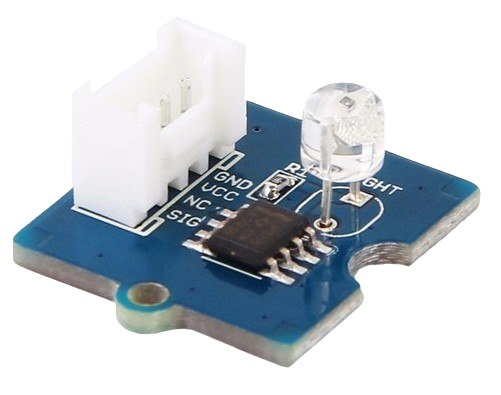

Le capteur de lumière intègre une résistance variable en fonction de la lumière pour mesurer l'intensité lumineuse. La résistance de ce composant diminue à mesure que l'intensité de la lumière augmente. Le signal de sortie est de nature analogique : plus la lumière est intense, plus la valeur est élevée. Ce module permet de réaliser un interrupteur commandé par la lumière, par exemple pour éteindre l'éclairage le jour et l'allumer la nuit.

| Interface | Alimentation | éclairement maximal mesuré | Consommation | Temps de réponse | Spectre sensible | Longueur d'onde principale | Dimensions |
|---|---|---|---|---|---|---|---|
| compatible Grove | 3,3 à 5 Vcc | 1000 lux | 0,5 à 3 mA | 20 à 30 ms | 450 – 1050 nm | 540 nm | 20 x 20 mm |